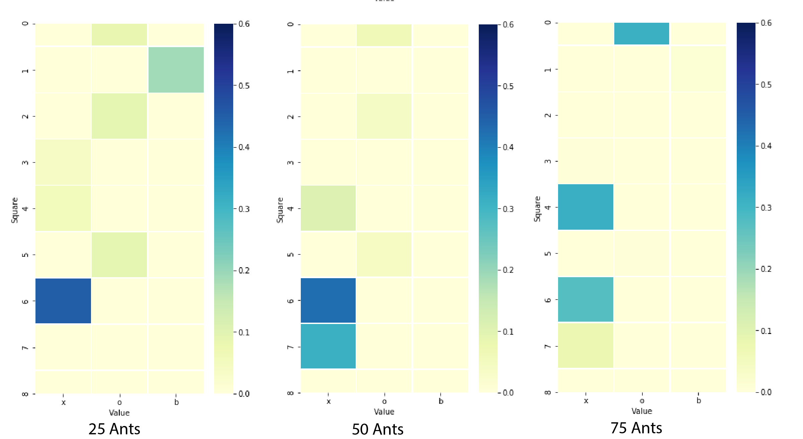
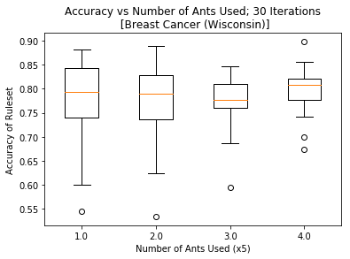

Ant Colony Algorithm Classification
In this project, we set out to recreate and expand upon Ant Miner, the Ant Colony Algorithm (ACA) for data classification originally proposed by Parpinelli et al. Specifically, they propose a method of using an ACA in order to discover rules that best discriminate between different classes present in a dataset based on measurable attributes.
Ant Miner is tested on various datasets from the UC Irvine Machine Learning Repository. The rulesets that are generated by Ant Miner are compared to rulesets generated by the CN2 algorithm, an established algorithm that similarly creates rulesets to classify data. Comparisons are made both in terms of rule complexity (how many terms are needed in a given rule), as well as rule quality (how well do rules actually classify the data). Through this comparison, they were able to show that Ant Miner was able to deliver classification rules that are much simpler than those of the CN2 algorithm while maintaining comparable classification accuracy.
The notebook displaying our work can be found here
Background
An Ant Colony Algorithm (ACA) is an agent based that simulates the natural swarming behavior of ants, namely cooperation and adaptation without direct communication. In an ACA, agents are trying to solve a given problem. The candidate solution proposed by an agent corresponds to a specific path. As the agent traverses the path, ‘pheromones’ are deposited. The amount of pheromone deposited along a path is directly related to the quality of the path, or solution. The amount of pheromones scattered along the landscape of all possible paths influences the paths of subsequent agents. While the construction of each path is ultimately stochastic, paths with high amounts of pheromone are much more likely to be followed by subsequent agents.
In the case for classifying sets of data, a path corresponds to a proposed rule to determine a class of data. In a dataset, there are a set of attributes common across all pieces of data, and across all attributes, there are a set of common possible values that that attribute can be. The various combinations of attributes and corresponding values makes up the landscape of possible moves from which a rule can be constructed. For instance, if we wished to classify breeds of dogs, the dataset might contain attributes such as fur type or fur color. Corresponding values could be short/medium/long and black/brown/white/mixed, respectively. An example rule generated in this scenario could be: “ If the fur type is long and the fur color is white, then the dog must be a Samoyed “.
Implementation Details
In our implementation, we created two classes, an Ant class and a Classification class. The Ant class represents a single ant, and contains all of the functions required for a single ant to create a ruleset. The Classification class handles the running of all ants until a minimum number of cases have been correctly classified by the created rules. The general structure of the algorithm is that an ant traverses the space of possible rules, adding a term for each attribute of the data. The terms the ant chooses are determined probabilistically by the pheromone trails left by previous ants, and a problem-dependent heuristic function. Once this ant finished creating its rule, we prune terms from it, (ie: removing redundant or detrimental terms in the rule) in order to prevent overfitting and to increase rule simplicity. Once all of the ants have created their rule, the Classification class picks the best rule (ie: the rule that best classifies part of the dataset) from the ants, and removes the pieces of data classified by the best rule from the dataset. The best rule is saved within the Classification object’s ruleset. This entire process is repeated until the Classification object’s ruleset can correctly classify a certain amount of the original dataset. We typically specified that the program must classify all but 35 pieces of data. In order to use an ACA to effectively classify data, additional steps must be taken. Firstly, a problem dependent heuristic is calculated given the attributes of the pieces of data that need to be classified. This heuristic seeks to quantify the normalized entropy associated with different combinations of data attributes and data classifications. In other words, this heuristic identifies attributes values of data that are highly correlated with a specific class. In a classic ACA, the probability of taking a step in a certain direction along a path is proportional to the amount of pheromone in that direction. However, in Ant Miner, the probability of taking a step in a certain direction is proportional to both the problem dependent heuristic function and the pheromones. Below is a heatmap which shows the distribution of pheromones over the state-space of attributes and corresponding options for tic-tac-toe at several timesteps. It is important to note that the state-space for most data is not rectangular like this, it just so happens that for Tic-Tac-Toe, each of the attributes (each one of the nine squares) has the same options (‘x’, ‘o’ or blank).The figure below shows how the ants explore the state space in the early stages and eventually settle on the most prominent locations towards the later stages.

Ant Miner implements rule pruning, a technique quite common in classification algorithms. After a path is first generated, the agent evaluates how much each part of the solution/path contributes to the overall quality of the solution/path. If any parts of the path are redundant, or harmful to the overall quality of the path, those parts are removed, or pruned, from the path. This process is done iteratively until all path segments directly benefit the quality of the overall path. This step is important as it allows for much faster convergence of rules and allows for the removal of ‘unlucky’ steps taken by the stochastic model.
After pruning, the Ant’s path and its associated quality is used to update the pheromones in the Simulation.
For any given dataset, we take a random 80% of the data to use for training, and set aside the remaining 20% to use for testing and validating. Because this entire process is stochastic, we do this process of randomly dividing the dataset into training and testing data ten times. This allows us to calculate the average accuracy of the resulting ruleset, as well as the standard deviation of the accuracy. Additionally, it allows us to calculate the average number of rules used in the ruleset, which is a useful metric for understanding the overall complexity of the ruleset.
Results
We use Ant Miner to classify three sets of data from the UCI Machine Learning Repository: Tic-tac-toe, Breast Cancer (Ljubljana), and Breast Cancer (Wisconsin) Ant Miner algorithm creates rules that correctly classify 92% (+/- 2.5%) of Tic-Tac-Toe games from a set of data, correctly classify 88.7% (+/- 3.4%) of breast cancer cases (Ljubljana), and correctly classify 78.9% (+/- 4.9%) of breast cancer cases
| Data | Percent Accuracy | Tolerance |
|---|---|---|
| Tic-Tac-Toe | 72% | +/- 4.5% |
| Ljubljana Breast Cancer | 66.7% | (+/- 6.8%) |
| Wisconsin Breast Cancer | 81.9% | (+/- 6.3%) |
Interpretation
Most of the generated rulesets contain only a few rules, typically fewer than 10. Despite this fact, Ant Miner’s rulesets are able to classify data with pretty reasonable levels of accuracy. It is important to note, however, that Ant Miner’s rulesets are purely a function of the data it was trained on: the generated rulesets may be good at classifying the data, but typically fail at getting to the reasons behind a piece of data’s classification. This is easy to see in the rulesets created for classifying games of Tic-Tac-Toe. There exists a ruleset that can perfectly classify any game. However, Ant Miner will simply construct a small set of relatively simple rules that are able to classify most of the data.
Extension
The paper we referenced used 3000 ants in their colony to classify sets of data. We were finding that we were getting similar levels of classification accuracy with far fewer ants (25). We wanted to understand how the number of ants in the simulation changed the effectiveness of the classification.
We swept through a series of ant colony sizes (5, 10, 15, 20, 25) and ran each colony size 20 times. This number was chosen to try and capture a good picture of the spread of the data across each colony size, but we didn’t have the time to run for many more iterations.

In this figure, we can see that the mean value and max value are pretty consistent across all colony sizes. However, the upper and lower quartiles shrink for the higher ant colonies. This tells us that more ants leads to more consistently high prediction accuracy, however not necessarily higher accuracy. We hypothesize that Parpinelli et. al used significantly more ants because they chose to classify more complex datasets. The larger the state space of attributes and potential attribute options, the more ants you will need to sufficiently explore the space and find useful locations.
Bibliography
Data mining with an ant colony optimization algorithm
R.S. Parpinelli, H.S. Lopes, A.A. Freitas, IEEE Transactions on Evolutionary Computation, Column: 6 Issue: 4 https://ieeexplore.ieee.org/stamp/stamp.jsp?tp=&arnumber=1027744